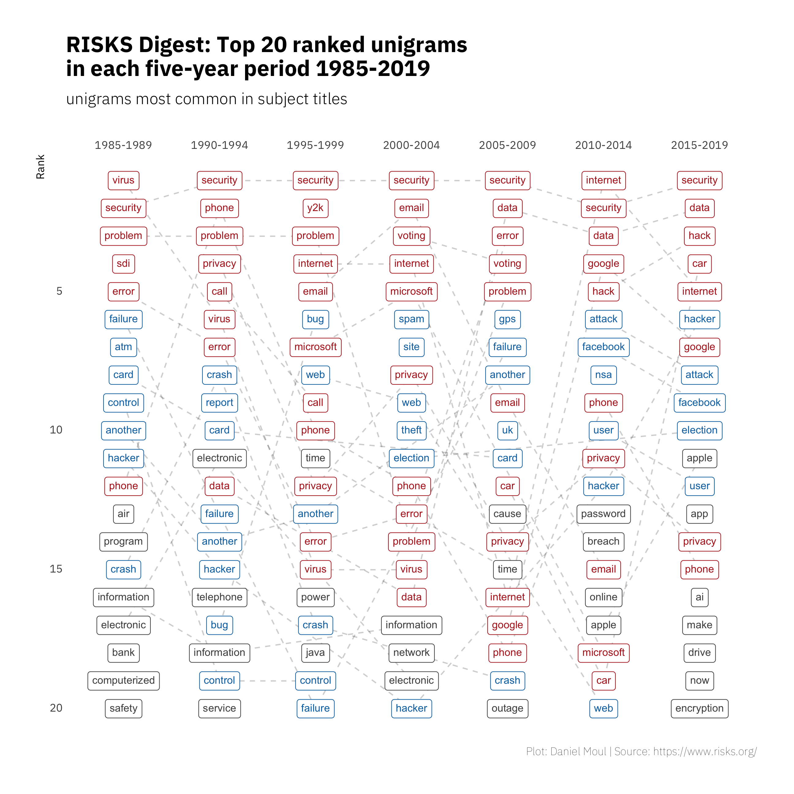
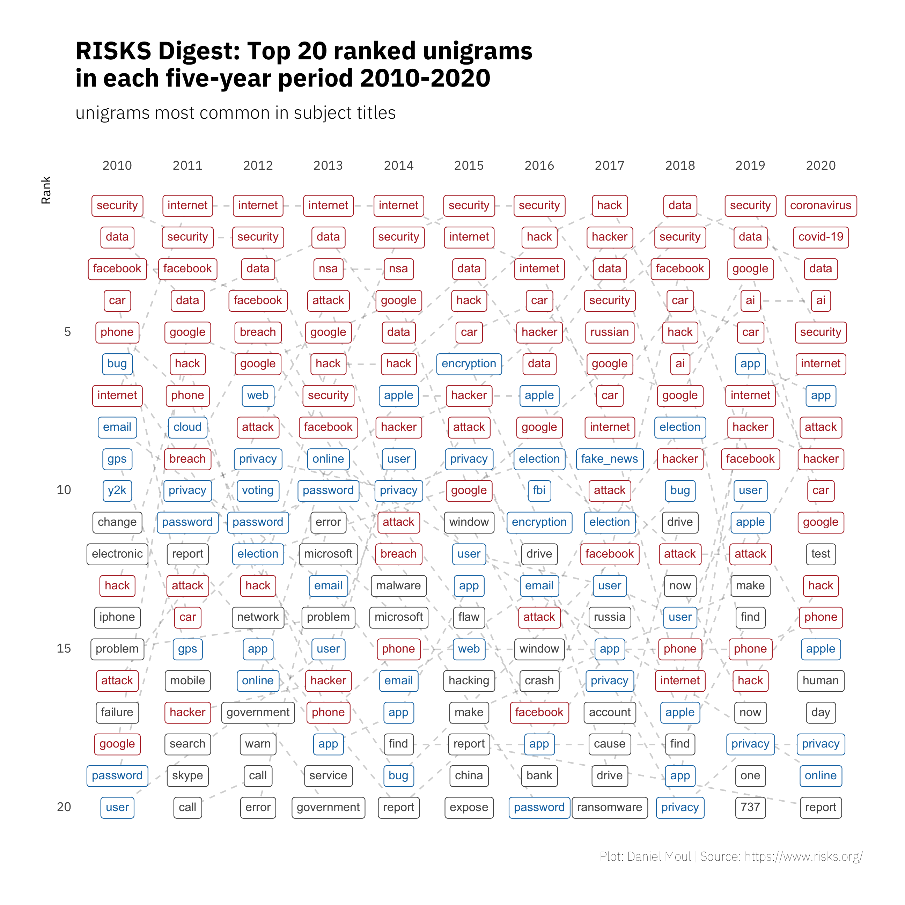
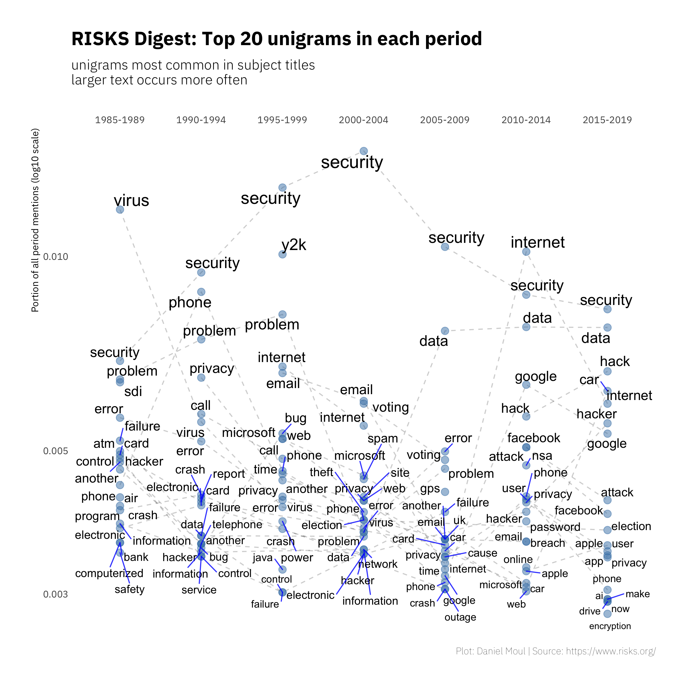
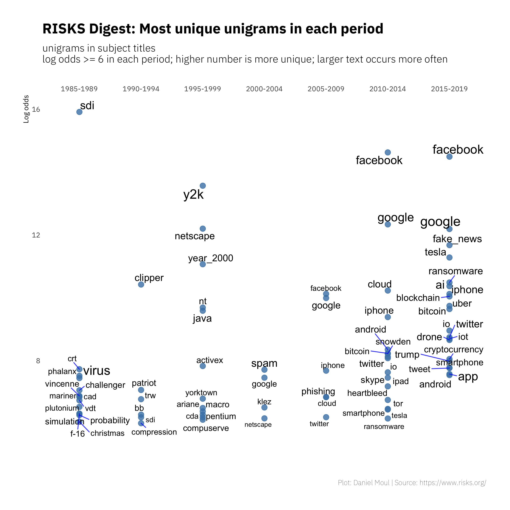
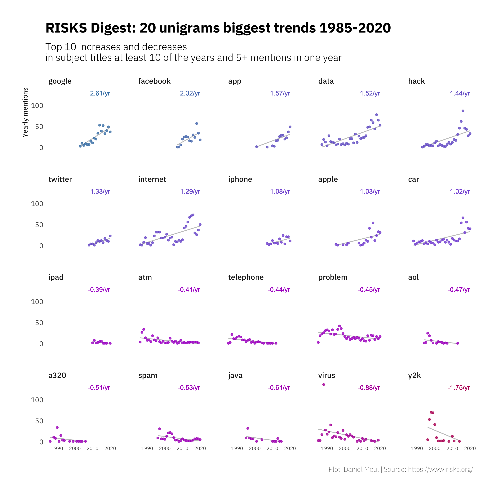
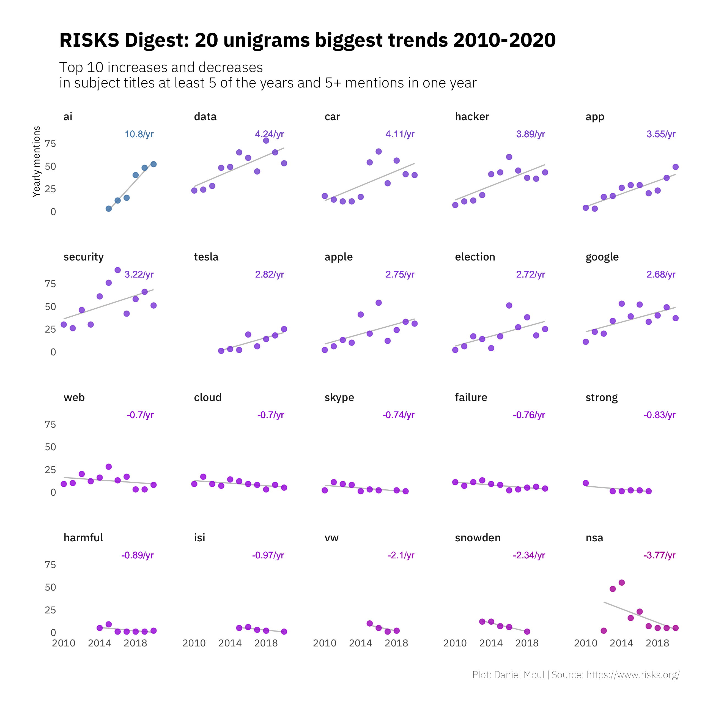

Through the lens of the RISKS Forum
2020-11-21
1 The lens
Over the last 35 years technology has changed a lot, but some things don’t change: failures occur, we can learn from them, and that’s happening in the RISKS Forum.
During this time we experienced the rise of mobile phones, the internet, the ever-wider use of software in planes, automobiles–and it seems–everything else; web- and mobile-native companies; machine learning, and verbal interfaces to applications. All brought new opportunities and conveniences as well as new attack vectors and failure modes.
The Forum on Risks to the Public in Computers and Related Systems was started in 1985 as the comp.risks USENET newsgroup, sponsored by the Association for Computing Machines (ACM) until 2018, and has been moderated by Peter G. Neumann since its inception. The archives are available at RISKS Digest, and new issues are available through email and newsfeed subscriptions. Its “front door” website is www.risks.org.
1.1 Hot topics and perennial favorites
Some risks come and go: remember Y2K? Others including security and privacy seem fresh every year. One way to discover the ebb and flow of topics is to count the occurrences of words in the subject titles of submissions to the RISKS Forum. These titles are natural summaries of much longer text in the bodies of the submissions.
Part 1 of this analysis does that, looking at the 32 RISKS Forum volumes published between 1985-08-28 and 2020-11-13. The volumes include 34,652 submission titles in 2,838 issues. There are median 96 issues in a volume and median 11 subjects in an issue. Submissions include more than 3,542,410 words (156,712 in titles, 3,385,698 in the bodies of messages).
I parsed the volume summary pages, for example: https://catless.ncl.ac.uk/Risks/29/index, using the popular text analysis library spaCy (using the spacyr wrapper by Kenneth Benoit and Akitaka Matsuo) to covert words to their canonical form (“lemma”). I use lemmas as one-word n-grams (a.k.a. “unigrams”), count their occurrence in certain time periods, and visualize the results below, making some observations along the way.
Note that the results are sensitive to data cleaning steps and various assumptions, including which words (including “risk”, “computer”, “software” and “system”) I consider too common and therefore filter out. See Limitations and other notes.
1.2 Visualizations and discussion
Counting the frequency of unigrams in five-year periods and ranking them in each period makes visible some trends in Figure 1.1. Unigrams that are ranked in the top five at least one year are red; unigrams are blue if their highest rank was six to ten at least one year.
Consistent topics over the years
- Security and privacy are always relevant. Voting keeps coming up: the security and trustworthiness of the voting process, computerized voting machines, and proposals for on-line voting.
- Hacker and hack are common too. Other sources of problems include error, failure, bug, crash, attack, breach, theft, and outage.
Changing topics
- Bank, credit card, the phone system, and computer virus topics gave way to mobile phone, the internet, on-line activities, cars, a direct focus on data, and fake news.
- Y2K came and went, as did lots of discussion of email and spam, and the security of Microsoft software. Microsoft was mentioned often 1995-2004; after that Google, Facebook and Apple make their appearance.
Figure 1.1: Unigram rank by frequency: five-year periods
Now let’s zoom in and consider only 2010+. In Figure 1.2 we see security, internet, data, and car in the top five most years. At least one of hack, hacker, attack or NSA are usually in the top five. In the most recent years Facebook and Google are near the top, and Russian interference in the 2016 election was a common topic. Since 2017 AI is a common topic, and we find “fake_news” makes the ranking in 2017–after the 2016 US presidential election. (Turning “fake news” into the unigram “fake_news” is an intervention on my part to avoid losing visibility of this significant topic). Unsurprisingly, in 2020 Coronavirus and COVID-19 top the list.
Figure 1.2: Unigram rank by frequency: five-year periods
Returning to five-year periods, we can see the relative frequency of the unigrams within and across these periods by plotting the portion of mentions during each period in Figure 1.3.
Figure 1.3: Unigram frequency: five-year periods
Which unigrams are most uniquely to be found in each period? We represent distinctiveness in terms of weighted log odds, which is the natural log of the odds of finding the unigram in one period compared to all the other periods. Figure 1.4 reinforces earlier observations of the changing topics:
- The focus on Y2K leading up to the big date as well as “year 2000”, converted here to year_2000
- The Strategic Defense Initiative (SDI) in the Reagan era
- User interfaces CRT and VTD giving way to iphone
- The rise of Facebook, Google, Twitter and Tesla
- The decline of Compuserve and Netscape
- New software technologies and their implementation: concerns about ActiveX and Java were replaced by blockchain, bitcoin, and Android)
We also see discussion of topics that were popular for a short time
- USS Vincennes shooting down an Iranian airliner
- Patriot missiles, Ariane rockets, and the Challenger disaster
- Computer virus topics and specific malware, including klez and heartbleed
Figure 1.4: Most unique unigrams: five-year periods
Which unigrams changed the most in number of mentions, either becoming more common or less common over the full period? I interpret the slope of linear regression lines as the magnitude of the trends in Figure 1.5, sorting them from greatest increase to greatest decrease.
Linear regression lines under-represent recent large swings for topics including data, hack and car that have been around since the beginning.
Figure 1.5: Unigrams with biggest change in frequency: all years
Again we can zoom into 2010+ and this time look at the topics with biggest positive and negative trends in Figure 1.6. Here AI, data, hacker, and security are among those terms growing the most in recent years while Snowdon and NSA show the steepest declines, representing both the significant discussion of the Snowden revelations in 2014-2015 and their fading after 2016.
Figure 1.6: Unigrams with biggest change in frequency: 2010+
1.3 Lessons from the RISKS Forum
I’ve been reading the RISKS Forum for more than twenty years. Below are some of the lessons I have gathered during this time.
- Your product is a system and is part of a larger system.
- The application of any new technology occurs in the context of a system.
- Design your systems to be resilient to failures.
- When there is a catastrophic failure, it’s not uncommon that it occurred due to a series of lesser failures. During the design and testing phases of product development, the failure modes were not considered or it was not considered possible that they would occur at the same time. Or once in operation, lesser failures were allowed to fester, sometimes with the rationale “We have redundant systems.”
- The weak link is often people, including their willingness or ability over the long term to follow rules and procedures and uphold the cultural norms necessary to maintain safe, reliable systems. People respond to their incentives, and managers’ incentives in particular seem too often to be at odds with maximizing safe and reliable operations, since they face pressures to limit costs and find new efficiencies.
- People can be inattentive, distracted, confused, lazy, or malicious. You should take this into account in your designs.
- Your design should guide people to the right things and require extra effort to do what may be the wrong things. Most people want to do the right things, and you may not have thought of all the “right things” they need to do.
- When failures occur in or with systems that were not well designed, it’s common to blame the users.
By Daniel Moul (heydanielmoul via gmail)
 This work is licensed under a Creative Commons Attribution 4.0 International License
This work is licensed under a Creative Commons Attribution 4.0 International License